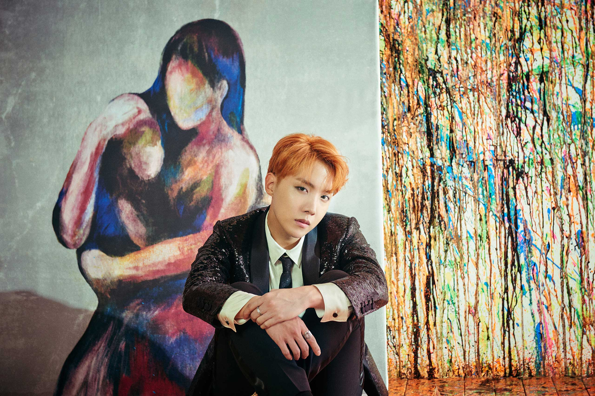
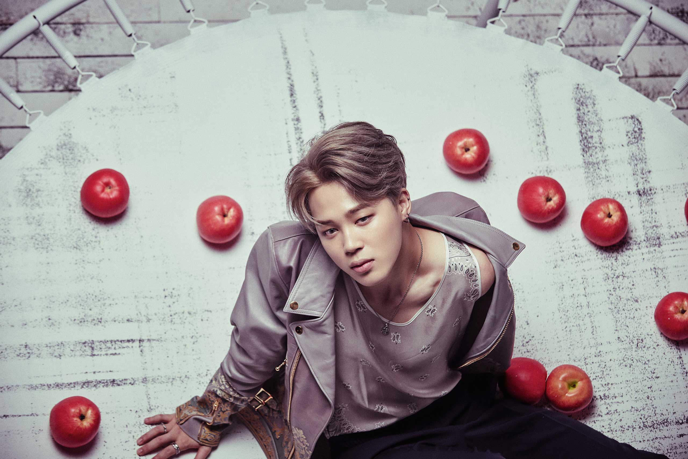
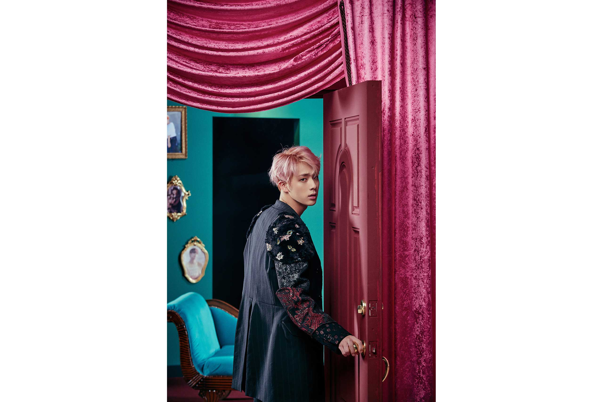
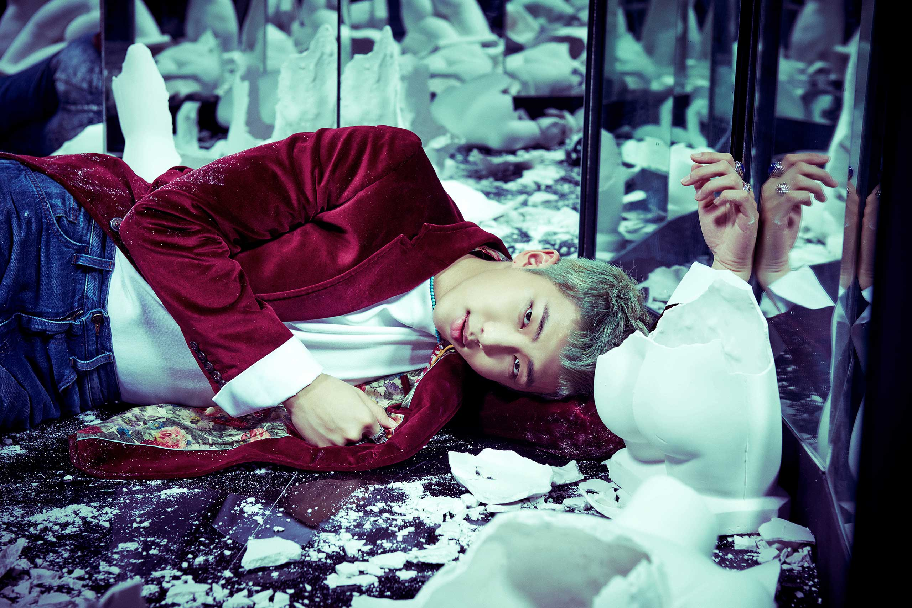
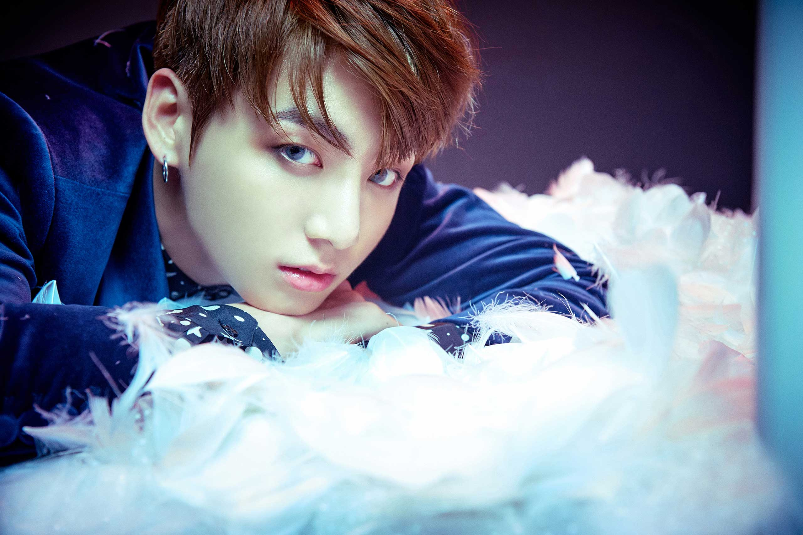
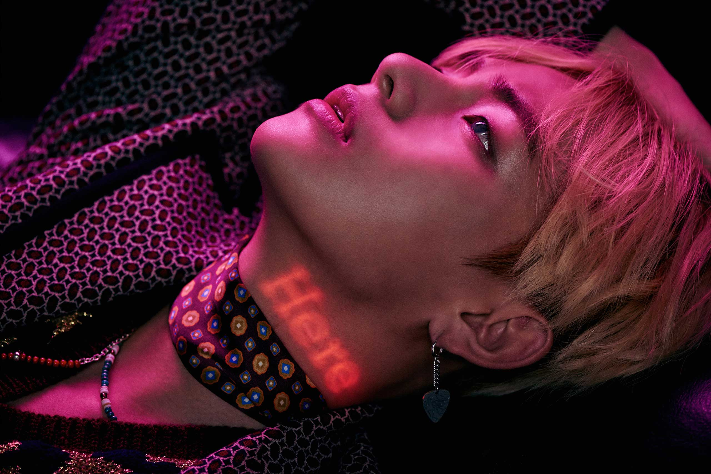

Wings (hangul: 윙스)? es el segundo álbum de estudio del grupo surcoreano BTS.
Fue publicado en Corea del Sur el 10 de octubre de 2016
en cuatro versiones diferentes —W, I, N y G— y con un total de quince temas,
siete de los cuales eran canciones en solitario de cada uno de los miembros del grupo.
1 El álbum fue lanzado también en Japón el 12 de octubre, en Malasia el 17 de octubre
y en Taiwán el 4 de noviembre de 2016.234 Una reedición del disco
llamada Wings: You Never Walk Alone fue anunciada para el 12 de febrero de 2017
y la misma contiene la versión completa de «Interlude: Wings», ahora llamada «Outro: Wings», además de tres canciones nuevas.






Intro: Boy Meets Evil
Blood Sweat & Tears
Begin
Lie
Stigma
First Love
Reflection
MAMA
Awake
Lost
Cypher Pt.4
Am I wrong
21st Century Girls
2! 3!
Interlude: Wings